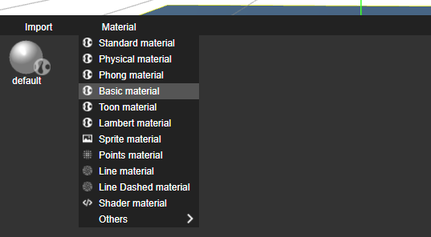

Materials describe the appearance of objects. Materials define how the object superficie is renderer and can have attached to them textures, colors, videos, etc.
There are various types of materials available inside nunuStudio and there is even the possibility of creating customized materials using GLSL shaders, more information about material types can be found here. Here is a list of some of the most used material types:
Standard material - A standard physically based material. Physically based rendering (PBR) has recently become the standard in many 3D applications, such as Unity, Unreal and 3D Studio Max. More infomation abou PBR here.
Phong material - A material for shiny surfaces with specular highlight.
Lambert material - A material for non-shiny surfaces, without specular highlights.
Basic material - A material for drawing geometries in a simple shaded way. This material is not affected by lights.
Sprite material - Special type of material to be used with sprite objects.
Shader material - Shader materials can be customized using GLSL code.
The example bellow shows 4 different material types running, from the left to the right we have a Standard material, Phong material, Lambert material and a Basic Material, as we can se the Standard (PBR) and Phong materials are more detailed, the lambert material has basic light support (per vertex light calculation) and the basic material does not react to light.
Materials can be crated by clicking on the Material menu in the resource explorer, and selecting the type of material desired, materials are also created when a image or video file is dragged to a mesh object or to the resource explorer.
After creating a material its possible edit its attributes double clicking on top of it on the resource explorer, this will open a new material editor tab.
Inside the material editor its possible to change every material parameter, add textures, change colors, etc.
On the left side of the material editor there is a real time preview of the material applied to an object that can be moved using the mouse left button, its also possible to change the preview settings on the bottom section of the left side.

Materials can have textures attached to them, textures can be used to define the color of the material surface, but can also be used to define other attributes of the material, like the roughness, metalness, normal vectors, etc.
To add a texture to a material its possible to drag a texture from the resource explorer or drag direcly a image or video file from the host to the desired place in the material editor. This will automatically create a new texture object and attach it to the material.
In this example we will explore a PBR based texturing set (using a StandardMaterial) to demonstrate how each type of texture affects the material. The following textures will be used:
Color texture - Defines the color of the object surface.
Normal texture - Defines how the surface of the object reacts to light (encode the normal vector of the object in rgb color).
Height texture - Used to increase detail on the object by applying deformations to it to match the material shape.
Metalness texture - Defines how metallic is the surface of the object.
Roughness texture - Defines how rough is the surface of the object.


The example bellow demonstrates how this different textures influence the material appearance, to try this example in the editor you can download the project file or open it on the Web Editor.
To apply a material to an object select the scene editor and drag the material from the resource explorer to the desired object. Another way to create materials is by dragging an external image or video file direcly to a object in the scene explorer, this will create a Standard or Sprite material (depending on the object) automatically using the provided file as a texture.